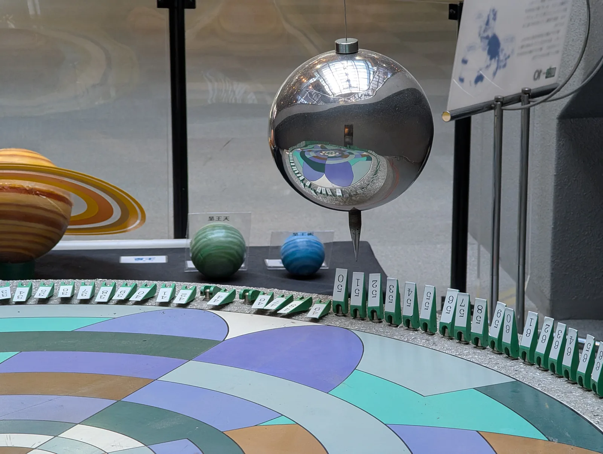

Jousivärähtelijä ja heiluri
Miksi jokainen keinu, heiluri ja jousen varassa pomppiva kappale värähtelee omassa tahdissaan, ja mikä sen tahdin määrää?
Pohjatiedot
- Jaksonaika $T$ on yhden jakson kesto, taajuus $f = \tfrac{1}{T}$ ja amplitudi suurin poikkeama tasapainoasemastaluku Värähtelyn suureet: jaksonaika, taajuus ja amplitudi
- Harmoninen voima $F = -kx$ osoittaa kohti tasapainoasemaa, ja jousen potentiaalienergia on $\tfrac{1}{2}kx^2$luku Jousivoima ja jousen energia
Pohdinta
Leikkipuistossa on kaksi vierekkäistä keinua, joiden ketjut ovat yhtä pitkät. Toisessa keinuu pieni lapsi, toisessa hänen isänsä. Hiekkalaatikon reunalla on lelu, jossa puinen lintu pomppii jousen varassa ylös ja alas, ja lapsi vetää sitä välillä vähän, välillä paljon. Jokainen näistä värähtelee edestakaisin omassa tahdissaan.
Mitkä suureet määräävät, kuinka kauan yksi edestakainen värähdys kestää, ja mitkä eivät vaikuta siihen lainkaan?
Valinnainen Kertaa: harmoninen voima
Ennusta
Tee ennusteet ennen tutkimista 2 kysymystä
Ennuste 1: suurempi värähdys
Ennuste 2: raskaampi heilurin kuula
Tutki
Simulaatio
Käyttöohje
Valitse Värähtelijä: jousi ja kappale tai heiluri. Säädä liukusäätimillä massa ja jousivakio tai pituus sekä amplitudi tai lähtökulma, ja paina Käynnistä. Kappale lähtee levosta ääriasennosta. Kuvaaja piirtää paikan $x$ tai kulman $\alpha$ ajan funktiona, ja merkintä $T$ näyttää kahden viimeisimmän saman puolen ääriasennon välin. Kuvaajan yläpuolella näkyvät sekuntikellon aika $t$ ja täysien jaksojen määrä $n$. Kankaan alla oleva palkki näyttää, miten energia jakautuu liike-energiaan $E_\text{k}$ ja potentiaalienergiaan $E_\text{p}$. Jousella nuolten pituudet ovat suhteessa kunkin suureen suurimpaan arvoon liikkeen aikana; heilurilla nuolet on piirretty samassa mittakaavassa kaikilla asetuksilla, joten pienessä heilahduksessa ne ovat lyhyitä. Nopeus muuttaa vain animaation tahtia, ei jaksonaikaa. Kun muutat jotakin arvoa, kappale palaa lähtöasentoon.
Mallin oletukset
Jousen ja kappaleen alusta on kitkaton, ja ainoa liikkeen suuntainen voima on jousen harmoninen voima $F = -kx$. Heiluri on matemaattinen heiluri: pistemäinen kappale massattoman langan varassa ilman ilmanvastusta, ja sen liike lasketaan tarkasta yhtälöstä myös suurilla kulmilla, joten pienen kulman likimääräisyyttä ei ole tehty. Vaimenemista ei ole, joten energia säilyy. Jaksonaika, taajuus ja energiat ovat mallin laskemia arvoja, eivät mittauksia.
Laskennan selitys
Liike lasketaan pienin aika-askelin: jokaisella askeleella kiihtyvyys saadaan voimasta ($a = -\tfrac{k}{m}x$ jouselle ja ratakiihtyvyys $a_\text{t} = -g\sin\alpha$ heilurille), ja siitä päivitetään nopeus ja paikka. Jaksonaika $T$ on liikkeestä mitattu aika lähtöhetkestä siihen, kun kappale on taas pysähtynyt samaan ääriasentoon; sitä ei lasketa jaksonajan kaavasta. Taajuus on $f = \tfrac{1}{T}$. Energia on jouselle $E = \tfrac{1}{2}kA^2$ ja heilurille $E = mgl(1 - \cos\alpha_0)$, kun potentiaalienergian nollataso on heilurin alimmassa kohdassa; $g = 9{,}81\,\text{m/s}^2$.
Valitse värähtelijä, säädä sen suureet ja käynnistä. Seuraa kuvaajasta, kuinka kauan yksi jakso kestää.
Koe 1: vain amplitudi muuttuu
Testaa ennuste 1. Kappaleen massa ja jousivakio pysyvät vakioina; muuta vain amplitudia. Kirjaa jaksonaika, suurin nopeus ja energia ainakin amplitudeilla $0{,}05\,\text{m}$ ja $0{,}10\,\text{m}$, halutessasi myös $0{,}20\,\text{m}$. Käynnistä välillä ja katso, kuinka pitkä jakso on kuvaajassa.
Alkutila: värähtelijä: jousi ja kappale, massa $m$ = $0{,}5\,\text{kg}$, jousivakio $k$ = $20\,\text{N/m}$, amplitudi $A$ = $0{,}05\,\text{m}$. Vakiona: värähtelijä, massa $m$, jousivakio $k$. Muutetaan: amplitudi $A$.
| amplitudi $A$ | $T$ $(\text{s})$ | $v_\text{max}$ $(\text{m/s})$ | $E$ $(\text{J})$ |
|---|
Lisää tutkittavaa 5 tehtävää
Koe 2: vain massa muuttuu
Jousivakio ja amplitudi pysyvät vakioina; muuta vain kappaleen massaa. Kirjaa jaksonaika ainakin massoilla $0{,}50\,\text{kg}$ ja $2{,}00\,\text{kg}$, halutessasi myös $0{,}20\,\text{kg}$ ja $0{,}80\,\text{kg}$.
Alkutila: värähtelijä: jousi ja kappale, massa $m$ = $0{,}5\,\text{kg}$, jousivakio $k$ = $20\,\text{N/m}$, amplitudi $A$ = $0{,}1\,\text{m}$. Vakiona: värähtelijä, jousivakio $k$, amplitudi $A$. Muutetaan: massa $m$.
| massa $m$ | $T$ $(\text{s})$ |
|---|
Koe 3: heilurin massa muuttuu
Testaa ennuste 2. Heilurin pituus on $1{,}00\,\text{m}$ ja lähtökulma $10^\circ$; muuta vain kuulan massaa. Kirjaa jaksonaika ja energia ainakin massoilla $0{,}10\,\text{kg}$ ja $1{,}00\,\text{kg}$.
Alkutila: värähtelijä: heiluri, massa $m$ = $0{,}1\,\text{kg}$, pituus $l$ = $1\,\text{m}$, lähtökulma $\alpha_0$ = $10^\circ$. Vakiona: värähtelijä, pituus $l$, lähtökulma $\alpha_0$. Muutetaan: massa $m$.
| massa $m$ | $T$ $(\text{s})$ | $E$ $(\text{J})$ |
|---|
Koe 4: heilurin pituus muuttuu
Kuulan massa on $0{,}50\,\text{kg}$ ja lähtökulma $10^\circ$; muuta vain heilurin pituutta. Kirjaa jaksonaika ainakin pituuksilla $0{,}25\,\text{m}$ ja $1{,}00\,\text{m}$. Kuinka moninkertaiseksi jaksonaika muuttuu, kun pituus nelinkertaistuu?
Alkutila: värähtelijä: heiluri, massa $m$ = $0{,}5\,\text{kg}$, pituus $l$ = $0{,}25\,\text{m}$, lähtökulma $\alpha_0$ = $10^\circ$. Vakiona: värähtelijä, massa $m$, lähtökulma $\alpha_0$. Muutetaan: pituus $l$.
| pituus $l$ | $T$ $(\text{s})$ |
|---|
Valinnainen Lisätutkimus: suuret heilahdukset
Heilurin pituus on $1{,}00\,\text{m}$; muuta vain lähtökulmaa. Kirjaa jaksonaika esimerkiksi kulmilla $5^\circ$, $20^\circ$, $40^\circ$ ja $60^\circ$, ja vertaa pienen kulman arvoon $2\pi\sqrt{\tfrac{l}{g}} = 2{,}006\,\text{s}$. Millä kulmalla ero alkaa näkyä?
Alkutila: värähtelijä: heiluri, massa $m$ = $0{,}5\,\text{kg}$, pituus $l$ = $1\,\text{m}$, lähtökulma $\alpha_0$ = $5^\circ$. Vakiona: värähtelijä, massa $m$, pituus $l$. Muutetaan: lähtökulma $\alpha_0$.
| lähtökulma $\alpha_0$ | $T$ $(\text{s})$ |
|---|
Mitä taulukkosi kertoo heilurin jaksonajasta suurilla lähtökulmilla? Miksi jaksonaika kasvaa suurilla kulmilla? Milloin kaavaa $T = 2\pi\sqrt{\tfrac{l}{g}}$ voi käyttää?
Mallivastaus
Pienillä kulmilla jaksonaika on lähes sama: $5^\circ$:lla $2{,}007\,\text{s}$ ja $10^\circ$:lla $2{,}010\,\text{s}$, alle $0{,}2\,\%$ yli kaavan arvon $2{,}006\,\text{s}$. Suurilla kulmilla jaksonaika kasvaa: $20^\circ$:lla $2{,}021\,\text{s}$, $40^\circ$:lla $2{,}069\,\text{s}$ ja $60^\circ$:lla $2{,}153\,\text{s}$, noin $7\,\%$ yli. Palauttava voima $mg\sin\alpha$ jää suurilla kulmilla pienemmäksi kuin harmonisessa mallissa, joten heiluri palaa hitaammin. Kaavaa voi käyttää, kun heilahdukset ovat pieniä, noin alle $10^\circ$. Arvot ovat mallin laskemia.
Arvioi oma vastauksesi
Rastita kohdat, jotka omassa vastauksessasi jo on.
Kertaa asia teoriasta ja harjoittele tehtävillä.
Johtopäätös: mistä jaksonaika riippuu?
Kirjoita taulukoidesi perusteella: mitkä suureet muuttivat jousen ja kappaleen jaksonaikaa ja mitkä eivät? Entä heilurin? Kuinka moninkertaiseksi jaksonaika muuttui, kun massa tai pituus nelinkertaistui? Miksi massa vaikuttaa jousella mutta ei heilurilla?
Mallivastaus
Jousen ja kappaleen jaksonaika pysyi $0{,}993\,\text{s}$:ssa, kun amplitudi kasvoi $0{,}05\,\text{m}$:stä $0{,}10\,\text{m}$:iin; suurin nopeus kaksinkertaistui ja energia nelinkertaistui. Kun massa nelinkertaistui $0{,}50\,\text{kg}$:sta $2{,}00\,\text{kg}$:aan, jaksonaika kaksinkertaistui $1{,}99\,\text{s}$:iin. Heilurin jaksonaika oli $2{,}01\,\text{s}$ kaikilla massoilla, mutta kun pituus nelinkertaistui $0{,}25\,\text{m}$:stä $1{,}00\,\text{m}$:iin, jaksonaika kaksinkertaistui $1{,}00\,\text{s}$:sta $2{,}01\,\text{s}$:iin. Jaksonaika on siis verrannollinen massan tai pituuden neliöjuureen. Jousella massa vaikuttaa, koska jousen voima ei kasva massan mukana; heilurilla palauttava voima on osa painoa ja kasvaa massan mukana. Arvot ovat mallin laskemia, ilman kitkaa ja ilmanvastusta.
Arvioi oma vastauksesi
Rastita kohdat, jotka omassa vastauksessasi jo on.
Kertaa asia teoriasta ja harjoittele tehtävillä.
Teoria
Ydinajatus
Luvussa Jousivoima ja jousen energia jousen voima oli $F = -kx$: se on suoraan verrannollinen poikkeamaan $x$ tasapainoasemasta ja osoittaa aina kohti tasapainoasemaa. Kun kappale vedetään sivuun ja päästetään irti, voima kiihdyttää sitä kohti tasapainoasemaa. Tasapainoasemassa voima on nolla, mutta kappaleella on nopeutta, joten se jatkaa toiselle puolelle. Siellä voima jarruttaa sen, pysäyttää ääriasennossa ja kääntää takaisin. Liike toistuu samanlaisena: kappale värähtelee. Kun värähtelyn aiheuttaa harmoninen voima, liikettä sanotaan harmoniseksi värähtelyksi.
Kuvassa näkyy liikkeen rytmi. Ääriasennoissa $x = A$ ja $x = -A$ nopeus on nolla, mutta voima ja kiihtyvyys ovat suurimmillaan. Tasapainoasemassa tilanne on päinvastainen: voima ja kiihtyvyys ovat nolla ja nopeus on suurimmillaan. Kiihtyvyys osoittaa aina kohti tasapainoasemaa, samaan suuntaan kuin voima.
Paikka ajan funktiona
Kun harmonisen värähtelijän paikka piirretään ajan funktiona, saadaan siniaallon muotoinen käyrä. Luvun Värähtelyn suureet: jaksonaika, taajuus ja amplitudi käsitteet näkyvät siinä suoraan. Amplitudi $A$ on suurin poikkeama tasapainoasemasta. Jaksonaika $T$ on aika, jossa kappale tekee yhden kokonaisen edestakaisen värähdyksen ja palaa samaan kohtaan samaan suuntaan liikkuen, esimerkiksi kahden peräkkäisen huipun väli. Taajuus $f = \tfrac{1}{T}$ kertoo värähdysten määrän sekunnissa.

Miksi amplitudi ei muuta jaksonaikaa
Harmonisella värähtelijällä on erikoinen ominaisuus. Jos amplitudi kaksinkertaistetaan, kappaleen matka yhden jakson aikana kaksinkertaistuu. Samalla myös voima jokaisessa vastaavassa kohdassa kaksinkertaistuu, koska $F$ on verrannollinen poikkeamaan. Kaksinkertainen voima antaa kaksinkertaisen kiihtyvyyden, ja samassa ajassa kaksinkertainen kiihtyvyys kasvattaa nopeutta kaksinkertaisesti. Pidempi matka kuljetaan siis suuremmalla nopeudella, ja aikaa kuluu yhtä paljon. Harmonisen värähtelijän jaksonaika ei riipu amplitudista. Se riippuu vain siitä, kuinka suuri massa on liikkeessä ja kuinka jäykkä jousi sitä palauttaa.
Harmonisen värähtelijän jaksonaika
Jousi ja kappale
Kun kappale värähtelee jousen varassa ja ainoa liikkeen suuntainen voima on jousen harmoninen voima, jaksonaika on
$$T = 2\pi\sqrt{\frac{m}{k}}$$
missä $T$ on jaksonaika ($\text{s}$), $m$ värähtelevän kappaleen massa ($\text{kg}$) ja $k$ jousen jousivakio ($\text{N/m}$). Suurempi massa kiihtyy samasta voimasta hitaammin, joten jaksonaika kasvaa massan kasvaessa. Jäykempi jousi antaa suuremman voiman, joten jaksonaika lyhenee. Neliöjuuri tarkoittaa, että massa on nelinkertaistettava, jotta jaksonaika kaksinkertaistuu. Kaava pätee myös pystysuoraan riippuvaan jouseen: paino siirtää vain tasapainoasemaa, mutta poikkeama siitä noudattaa samaa lakia.
Kaavan voi perustella ympyräliikkeen avulla. Kun kappale kiertää tasaisesti ympyrää, jonka säde on $A$, sen varjo halkaisijan suuntaisella seinällä liikkuu edestakaisin. Varjon kiihtyvyys on normaalikiihtyvyyden $a_\text{n} = \tfrac{4\pi^2 A}{T^2}$ komponentti, ja se on $-\tfrac{4\pi^2}{T^2}x$ eli verrannollinen poikkeamaan. Jousen varassa Newtonin toisesta laista saadaan $a = -\tfrac{k}{m}x$. Kun kertoimet merkitään yhtä suuriksi, $\tfrac{4\pi^2}{T^2} = \tfrac{k}{m}$, ja tästä ratkeaa jaksonaika.
Matemaattinen heiluri
Matemaattisessa heilurissa pistemäinen kappale riippuu kevyen langan varassa ja heilahtelee ilman ilmanvastusta. Ääriasennossa nopeus on nolla, ja langan jännitysvoima $\overline{S}$ kumoaa painon langan suuntaisen komponentin. Jännitysvoimasta käytetään tässä tunnusta $S$, koska $T$ on jaksonaika. Liikettä ohjaa painon radan suuntainen komponentti $G_\text{t} = mg\sin\alpha$, joka osoittaa kohti tasapainoasemaa.
Pienillä kulmilla $\sin\alpha$ on likimain kulma radiaaneina, ja kaarenpituus tasapainoasemasta on $s = l\alpha$. Palauttava voima on silloin $\tfrac{mg}{l}s$ eli verrannollinen poikkeamaan, ja heiluri on harmoninen värähtelijä, jonka "jousivakiona" on $\tfrac{mg}{l}$. Kun se sijoitetaan jousen kaavaan, massa supistuu pois. Pienillä heilahduksilla matemaattisen heilurin jaksonaika on
$$T = 2\pi\sqrt{\frac{l}{g}}$$
missä $T$ on jaksonaika ($\text{s}$), $l$ heilurin pituus eli langan kiinnityskohdan ja kappaleen painopisteen etäisyys ($\text{m}$) ja $g$ putoamiskiihtyvyys ($9{,}81\,\text{m/s}^2$). Jaksonaika ei riipu kappaleen massasta eikä pienillä heilahduksilla amplitudista.
Kaava on likiarvo, joka pätee pienillä heilahduskulmilla. Kun lähtökulma kasvaa, $\sin\alpha$ jää pienemmäksi kuin kulma radiaaneina, palauttava voima jää harmonista pienemmäksi ja jaksonaika kasvaa hieman. Taulukossa on todellinen jaksonaika $T$ suhteessa kaavan antamaan arvoon $T_0$:
| Lähtökulma | $T : T_0$ |
|---|---|
| $10^\circ$ | $1{,}002$ |
| $20^\circ$ | $1{,}008$ |
| $40^\circ$ | $1{,}031$ |
| $60^\circ$ | $1{,}073$ |
Alle $10^\circ$ heilahduksilla ero on alle $0{,}2\,\%$, mikä on pienempi kuin käsin ajanoton epävarmuus.
Energia värähtelyssä
Kun kitka ja ilmanvastus jätetään huomiotta, värähtelijän mekaaninen energia säilyy. Jousen ja kappaleen energia on liike-energian ja jousen potentiaalienergian summa. Ääriasennossa nopeus on nolla ja kaikki energia on potentiaalienergiaa, joten
$$\frac{1}{2}mv^2 + \frac{1}{2}kx^2 = \frac{1}{2}kA^2$$
missä $m$ on massa ($\text{kg}$), $v$ nopeus ($\text{m/s}$), $k$ jousivakio ($\text{N/m}$), $x$ poikkeama tasapainoasemasta ($\text{m}$) ja $A$ amplitudi ($\text{m}$). Oikea puoli on värähtelyn energia $E = \tfrac{1}{2}kA^2$. Tasapainoasemassa $x = 0$, joten kaikki energia on liike-energiaa ja nopeus on suurimmillaan. Heilurissa energia vaihtelee samalla tavalla painovoiman potentiaalienergian ja liike-energian välillä.
Yleinen virhekäsitys
Moni ajattelee, että raskas heilurin kuula heilahtaa nopeammin, koska siihen vaikuttaa suurempi paino. Raskaampaan kuulaan vaikuttaa suurempi voima, mutta sitä on myös vaikeampi kiihdyttää: kiihtyvyys $a = \tfrac{F}{m}$ pysyy samana, kuten vapaassa pudotuksessa. Siksi heilurin jaksonaika ei riipu massasta. Jousen varassa massa sen sijaan vaikuttaa, koska jousen voima ei kasva massan mukana.
Toinen virhe on luulla, että suurempi heilahdus kestää kauemmin. Harmonisella värähtelijällä pidempi matka kuljetaan suuremmalla nopeudella, joten jaksonaika pysyy samana; heilurilla tämä pätee pienillä heilahduksilla. Suurilla heilahduskulmilla heilurin jaksonaika kasvaa hieman, kuten taulukko edellä näyttää. Kolmas virhe on sekoittaa jakso puolikkaaseen: yksi jakso on edestakainen liike, joka päättyy samaan ääriasentoon, josta se alkoi.
Tiivistelmä
- Harmoninen voima $F = -kx$ saa kappaleen harmoniseen värähtelyyn: paikka ajan funktiona on siniaallon muotoinen käyrä, jonka amplitudi on $A$ ja jaksonaika $T$.
- Jousen ja kappaleen jaksonaika on $T = 2\pi\sqrt{\tfrac{m}{k}}$: se kasvaa massan kasvaessa ja lyhenee jousen jäykistyessä, mutta ei riipu amplitudista.
- Matemaattisen heilurin jaksonaika on pienillä heilahduksilla $T = 2\pi\sqrt{\tfrac{l}{g}}$: se riippuu pituudesta ja putoamiskiihtyvyydestä, ei massasta. Suurilla kulmilla jaksonaika on hieman pidempi.
- Taajuus on $f = \tfrac{1}{T}$. Jaksonaika mitataan useasta jaksosta, jotta ajanoton epävarmuus jakautuu monelle jaksolle.
- Värähtelyn energia $E = \tfrac{1}{2}kA^2$ säilyy, kun kitka ja ilmanvastus jätetään huomiotta. Vaimeneminen pienentää energiaa ja amplitudia.
Valinnainen Palaa ennusteisiisi
Vertaa ennusteitasi kokeiden mallin arvoihin ja kaavoihin $T = 2\pi\sqrt{\tfrac{m}{k}}$ ja $T = 2\pi\sqrt{\tfrac{l}{g}}$. Palaa sitten alun kysymykseen: heilahtavatko lapsi ja isä samassa tahdissa, jos he keinuvat yhtä pitkillä ketjuilla pienin heilahduksin? Mikä määrää puisen linnun pomppimisen tahdin?
Muuttaisitko ennustettasi?
Valinnainen Vaimeneminen
Vaimeneminen
Todellisissa värähtelijöissä ilmanvastus ja kitka muuttavat osan mekaanisesta energiasta sisäenergiaksi. Silloin energia $E = \tfrac{1}{2}kA^2$ pienenee, ja amplitudi pienenee jakso jaksolta. Tätä sanotaan vaimenemiseksi. Kun vaimeneminen on pientä, jaksonaika pysyy lähes samana kuin ilman vaimenemista. Heilurin jaksonaika riippuu kuitenkin hieman amplitudista, joten tarkassa heilurikellossa amplitudin on pysyttävä vakiona. Siksi kellon paino tai jousi syöttää energiaa vaimenemisen tilalle, ja heilahdukset pidetään pieninä. Silloin amplitudi pysyy lähes samana, eikä kello edistä eikä jätätä. Auton iskunvaimentimet taas on tehty vaimentamaan värähtely nopeasti, jotta auto ei jää keinumaan jokaisen kuopan jälkeen.
Esimerkit
Kun olet opiskellut luvun teorian, siirry ohjattuihin esimerkkeihin. Ensimmäisessä seuraat mallilaskua vaihe vaiheelta, seuraavissa teet valinnat itse, ja vihjeet auttavat, jos jäät jumiin.
Esimerkki 1: Jousen päässä värähtelevä kappale
Jousen päässä on $0{,}400\,\text{kg}$:n kappale, joka värähtelee kitkattomalla vaakasuoralla alustalla. Opiskelija mittaa sekuntikellolla, että kymmeneen täyteen värähdykseen kuluu $8{,}00\,\text{s}$. Kuinka suuri on jousen jousivakio?
Vaihe 1/7
Tunnetut ja kysytty. Massa $m = 0{,}400\,\text{kg}$, kymmenen jakson aika $t = 8{,}00\,\text{s}$. Kysytään jousivakiota $k$.
Vaihe 2/7
Periaate. Kappaleeseen vaikuttaa liikkeen suunnassa vain jousen harmoninen voima, joten liike on harmonista värähtelyä ja jaksonaika on $T = 2\pi\sqrt{\tfrac{m}{k}}$. Jaksonaika saadaan jakamalla kymmenen jakson aika kymmenellä.
Vaihe 3/7
Kaava ratkaistuna. Korotetaan jaksonajan kaava toiseen ja ratkaistaan $k$:
$$\begin{aligned} T^2 &= \frac{4\pi^2 m}{k} \\ k &= \frac{4\pi^2 m}{T^2} \end{aligned}$$
Vaihe 4/7
Yksikkömuunnokset. Ei tarvita: massa on kilogrammoina ja aika sekunteina, ja $\tfrac{\text{kg}}{\text{s}^2} = \tfrac{\text{N}}{\text{m}}$.
Vaihe 5/7
Sijoitus. Jaksonaika on
joten
$$\begin{aligned} k &= \frac{4\pi^2 m}{T^2} \\ &= \frac{4\pi^2 \cdot 0{,}400\,\text{kg}}{(0{,}800\,\text{s})^2} \\ &= 24{,}67\,\text{N/m} \end{aligned}$$
Vaihe 6/7
Tulos. Jousivakio on noin $24{,}7\,\text{N/m}$, kolmella merkitsevällä numerolla kuten massa $0{,}400\,\text{kg}$ ja aika $8{,}00\,\text{s}$.
Vaihe 7/7
Järkevyys. Tarkistetaan toiseen suuntaan: jos jousivakio olisi pyöreästi $25\,\text{N/m}$, jaksonaika olisi $2\pi\sqrt{0{,}400\,\text{kg} : 25\,\text{N/m}} \approx 0{,}795\,\text{s}$, hyvin lähellä mitattua $0{,}800\,\text{s}$:a. Noin $25\,\text{N/m}$:n jousi venyy $1\,\text{cm}$, kun sitä vedetään $0{,}25\,\text{N}$:n voimalla, mikä sopii kevyelle koulun jouselle. Taajuus on $f = \tfrac{1}{T} = 1{,}25\,\text{Hz}$, joten värähdyksiä on vähän yli yksi sekunnissa ja niitä on helppo laskea.
Esimerkki 2: Kokeellisesti: heilurin heilahdusajan määrittäminen
Keksitty esimerkkiaineisto
Opiskelija ripusti punnuksen ohueen lankaan niin, että heilurin pituus kiinnityskohdasta punnuksen painopisteeseen oli $1{,}000\,\text{m}$, ja poikkeutti sitä noin $5^\circ$. Hän mittasi sekuntikellolla kymmenen täyden jakson ajan viisi kertaa. Kello alkoi ja pysähtyi, kun punnus ohitti tasapainoaseman samaan suuntaan liikkuen, koska siinä kohdassa punnus liikkuu nopeimmin ja ohitushetken näkee tarkimmin.
| Mittaus | $10T$ (s) |
|---|---|
| 1 | $20{,}12$ |
| 2 | $19{,}94$ |
| 3 | $20{,}21$ |
| 4 | $19{,}88$ |
| 5 | $20{,}05$ |
Käsin ajanoton epävarmuus on noin $0{,}2\,\text{s}$, vaikka kello näyttää sadasosat. Kymmenen jakson mittaamisessa sama epävarmuus jakautuu kymmenelle jaksolle.
Laske mittausten keskiarvosta heilurin jaksonaika $T$. Vastaa sekunteina.
Vihje 1: ohjaava kysymys
Taulukossa on kymmenen jakson aika. Mikä on ensin laskettava, ja millä se jaetaan?
Vihje 2: mikä yhteys
Laske viiden mittauksen keskiarvo ja jaa se kymmenellä.
Vihje 3: välivaihe
Keskiarvo on $\tfrac{100{,}20\,\text{s}}{5} = 20{,}04\,\text{s}$.
Näytä ratkaisu
Annettu
heilurin pituus $l = 1{,}000\,\text{m}$, kymmenen jakson ajat $20{,}12\,\text{s}$, $19{,}94\,\text{s}$, $20{,}21\,\text{s}$, $19{,}88\,\text{s}$ ja $20{,}05\,\text{s}$, käsin ajanoton epävarmuus noin $0{,}2\,\text{s}$
Kysytty
jaksonaika $T$ yksikössä $\text{s}$
Periaate
Toistettujen mittausten keskiarvo pienentää satunnaisen virheen vaikutusta. Kymmenen jakson aika on kymmenen kertaa jaksonaika, ja koska ajanoton epävarmuus koskee vain alku- ja loppuhetkeä, kymmenen jakson mittaaminen pienentää jaksonajan epävarmuuden kymmenesosaan.
Kaava
$T = \dfrac{\overline{t}_{10}}{10}$, $\Delta T = \dfrac{\Delta t}{10}$
Muunnokset
Ajat ovat sekunteina, joten muunnoksia ei tarvita.
Sijoitus
Vastaus
$T = 2{,}004\,\text{s}$
Eli epävarmuuksineen $T = (2{,}00 \pm 0{,}02)\,\text{s}$. Epävarmuus on sadasosasekunteja, joten tulos ilmoitetaan sadasosien tarkkuudella.
Järkevyys
Pienten heilahdusten kaava antaa metrin heilurille jaksonajan $2{,}006\,\text{s}$, mikä on mittauksen epävarmuusvälin sisällä. Mittausten hajonta on samaa suuruusluokkaa kuin arvioitu epävarmuus: puolet vaihteluvälistä on $\tfrac{20{,}21\,\text{s} - 19{,}88\,\text{s}}{2} \approx 0{,}17\,\text{s}$.
Esimerkki 3: Miksi kymmenen jaksoa?
Valinnainen Esimerkki 4: Putoamiskiihtyvyys heilurista
Laske edellisen mittauksen jaksonajasta $T = 2{,}004\,\text{s}$ ja pituudesta $l = 1{,}000\,\text{m}$ putoamiskiihtyvyys $g$. Heilahdukset olivat pieniä. Vastaa yksikössä $\text{m/s}^2$.
Vihje 1: ohjaava kysymys
Kumpaa jaksonajan kaavaa käytät, ja mikä suure siitä on nyt ratkaistava?
Vihje 2: mikä yhteys
Korota $T = 2\pi\sqrt{\tfrac{l}{g}}$ toiseen ja ratkaise $g$.
Vihje 3: välivaihe
Näytä ratkaisu
Annettu
heilurin pituus $l = 1{,}000\,\text{m}$, jaksonaika $T = (2{,}004 \pm 0{,}02)\,\text{s}$, pienet heilahdukset
Kysytty
putoamiskiihtyvyys $g$ yksikössä $\text{m/s}^2$
Periaate
Pienillä heilahduksilla heilurin jaksonaika riippuu vain pituudesta ja putoamiskiihtyvyydestä, joten kun pituus ja jaksonaika on mitattu, putoamiskiihtyvyys voidaan ratkaista. Lähtökulma noin $5^\circ$ on niin pieni, että pienen kulman kaavan virhe on alle $0{,}1\,\%$.
Kaava
$T = 2\pi\sqrt{\dfrac{l}{g}}$, josta $T^2 = \dfrac{4\pi^2 l}{g}$ ja $g = \dfrac{4\pi^2 l}{T^2}$
Muunnokset
Pituus on metreinä ja aika sekunteina, joten muunnoksia ei tarvita.
Sijoitus
Vastaus
$g \approx 9{,}8\,\text{m/s}^2$
Jaksonajan epävarmuus on noin $1\,\%$, ja koska $T$ on kaavassa toisessa potenssissa, $g$:n epävarmuus on noin $2\,\%$: arvoilla $T = 2{,}024\,\text{s}$ ja $T = 1{,}984\,\text{s}$ saadaan $9{,}64\,\text{m/s}^2$ ja $10{,}03\,\text{m/s}^2$. Tulos ilmoitetaan siksi kahdella merkitsevällä numerolla, $g = (9{,}8 \pm 0{,}2)\,\text{m/s}^2$.
Järkevyys
Taulukkoarvo $9{,}81\,\text{m/s}^2$ on epävarmuusvälin sisällä. Tarkemman tuloksen saa, kun jaksonaika mitataan usealla pituudella ja putoamiskiihtyvyys määritetään $(l, T^2)$-kuvaajan kulmakertoimesta; sen tekee tutkimus Putoamiskiihtyvyyden määrittäminen heilurin avulla.
Valinnainen Esimerkki 5: Etsi virhe
Esimerkki 6: Sovella uuteen tilanteeseen
Avaruusasemalla vaa'at eivät toimi, koska kaikki on painottomassa tilassa. Astronautin massa mitataan siksi tuolilla, joka värähtelee jousen varassa. Tuolin oma massa on $10{,}0\,\text{kg}$ ja jousen jousivakio $1200\,\text{N/m}$. Kun astronautti istuu tuolissa, kymmeneen jaksoon kuluu $16{,}6\,\text{s}$.
Kuinka suuri on astronautin massa? Vastaa kilogrammoina.
Vihje 1: ohjaava kysymys
Miksi jousen jaksonaika toimii painottomuudessakin, vaikka paino ei? Mikä suure jaksonajan kaavassa on tuntematon?
Vihje 2: mikä yhteys
Laske ensin $T$ kymmenen jakson ajasta, ja ratkaise kaavasta $T = 2\pi\sqrt{\tfrac{m}{k}}$ värähtelevä kokonaismassa $m = \tfrac{kT^2}{4\pi^2}$.
Vihje 3: välivaihe
Kokonaismassa on
Mitä siitä on vielä vähennettävä?
Näytä ratkaisu
Annettu
tuolin massa $m_\text{t} = 10{,}0\,\text{kg}$, jousivakio $k = 1200\,\text{N/m}$, kymmenen jakson aika $t = 16{,}6\,\text{s}$
Kysytty
astronautin massa $m_\text{a}$ yksikössä $\text{kg}$
Periaate
Jousen ja kappaleen jaksonaika riippuu massasta eli hitaudesta, ei painosta, joten mittaus toimii painottomassa tilassa. Jousen varassa värähtelevät tuoli ja astronautti yhdessä, ja ainoa liikkeen suuntainen voima on jousen harmoninen voima.
Kaava
josta
Muunnokset
Suureet ovat SI-yksiköissä, joten muunnoksia ei tarvita.
Sijoitus
Vastaus
$73{,}8\,\text{kg}$
Kolme merkitsevää numeroa kuten ajassa $16{,}6\,\text{s}$.
Järkevyys
Aikuisen massa on tyypillisesti $60$–$90\,\text{kg}$, joten tulos on uskottava. Tarkistus: kokonaismassalla $83{,}76\,\text{kg}$ kaava antaa jaksonajaksi $1{,}66\,\text{s}$. Raskaampi astronautti saisi tuolin värähtelemään hitaammin.
Kertaa luvun käsitteet
Jos valitset Kertaa myöhemmin, kortti siirtyy kertauspakkaasi.
- Vaimeneminen
- Värähtelyn amplitudin pieneneminen, kun energiaa siirtyy ympäristöön esimerkiksi kitkan tai väliaineen vastuksen vuoksi.
- Jousivoima
- Jousen muodonmuutoksesta syntyvä palauttava voima.
- Harmoninen värähtely
- Värähdysliike, jossa poikkeama vaihtelee ajan funktiona sinimuotoisesti.
- Harmoninen värähtelijä
- Värähtelijä, jonka jaksonaika ei riipu amplitudista, koska palauttava voima on suoraan verrannollinen poikkeamaan.
- Jousivärähtelijä
- Jousen ja siihen kiinnitetyn kappaleen muodostama värähtelevä systeemi.$$T = 2\pi\sqrt{\dfrac{m}{k}}$$
- Heiluri
- Ripustettu kappale, joka heilahtelee tasapainoasemansa molemmin puolin painonsa vaikutuksesta.
- Matemaattinen heiluri
- Massattoman langan varassa heilahteleva pistemäinen kappale; pienillä poikkeamakulmilla:$$T = 2\pi\sqrt{\dfrac{l}{g}}$$
Tehtävät
Taso 1 · perusharjoitus 8 tehtävää
Yksi kaava tai yksi päättelyaskel. Ydintehtävät ensin, loput lisäharjoitusta.
- Tehtävä 9-1Ydintehtävä
Kappale, jonka massa on $0{,}80\,\text{kg}$, värähtelee kitkattomalla vaakasuoralla alustalla jousen varassa. Jousen jousivakio on $50\,\text{N/m}$. Kuinka suuri on värähtelyn jaksonaika?
Vastaus
$0{,}79\,\text{s}$
Näytä ratkaisu
Annettu
massa $m = 0{,}80\,\text{kg}$, jousivakio $k = 50\,\text{N/m}$, alusta kitkaton
Kysytty
jaksonaika $T$ yksikössä $\text{s}$
Periaate
Alusta on kitkaton, joten kappaleeseen vaikuttaa liikkeen suunnassa vain jousen harmoninen voima $F = -kx$. Liike on silloin harmonista värähtelyä, jonka jaksonaika riippuu vain massasta ja jousivakiosta.
Kaava
$T = 2\pi\sqrt{\dfrac{m}{k}}$
Muunnokset
Massa on kilogrammoina ja jousivakio yksikössä $\text{N/m}$, joten muunnoksia ei tarvita.
Sijoitus
$T$$= 2\pi\sqrt{\dfrac{0{,}80\,\text{kg}}{50\,\text{N/m}}}$$= 2\pi\sqrt{0{,}016\,\text{s}^2}$$= 2\pi \cdot 0{,}1265\,\text{s}$$= 0{,}7948\,\text{s}$Vastaus
$0{,}79\,\text{s}$
Kaksi merkitsevää numeroa kuten massassa $0{,}80\,\text{kg}$ ja jousivakiossa $50\,\text{N/m}$.
Järkevyys
Yksikkö:
$\tfrac{\text{kg}}{\text{N/m}}$$= \tfrac{\text{kg}\cdot\text{m}}{\text{kg}\cdot\text{m/s}^2}$$= \text{s}^2$joten neliöjuuresta tulee sekunteja. Alle sekunnin jaksonaika on tavallinen koulun jouselle ja alle kilogramman punnukselle: värähdykset ehtii laskea silmällä.
- Tehtävä 9-2
Kirjahyllyn kulmaan on ripustettu koristeeksi heiluri, jonka pituus on $0{,}600\,\text{m}$. Heilurin kuula heilahtelee pienin heilahduksin, ja ilmanvastus jätetään huomiotta. Kuinka suuri on heilurin jaksonaika?
Vastaus
$1{,}55\,\text{s}$
Näytä ratkaisu
Annettu
heilurin pituus $l = 0{,}600\,\text{m}$, pienet heilahdukset, ilmanvastus jätetään huomiotta, $g = 9{,}81\,\text{m/s}^2$
Kysytty
jaksonaika $T$ yksikössä $\text{s}$
Periaate
Heiluri on matemaattinen heiluri: pieni kuula langan varassa ilman ilmanvastusta. Pienillä heilahduksilla painon radan suuntainen komponentti on verrannollinen poikkeamaan, joten liike on harmonista ja jaksonaika riippuu vain pituudesta ja putoamiskiihtyvyydestä.
Kaava
$T = 2\pi\sqrt{\dfrac{l}{g}}$
Muunnokset
Pituus on metreinä, joten muunnoksia ei tarvita.
Sijoitus
$T$$= 2\pi\sqrt{\dfrac{0{,}600\,\text{m}}{9{,}81\,\text{m/s}^2}}$$= 2\pi\sqrt{0{,}06116\,\text{s}^2}$$= 2\pi \cdot 0{,}2473\,\text{s}$$= 1{,}554\,\text{s}$Vastaus
$1{,}55\,\text{s}$
Kolme merkitsevää numeroa kuten pituudessa $0{,}600\,\text{m}$ ja putoamiskiihtyvyydessä $9{,}81\,\text{m/s}^2$.
Järkevyys
Noin metrin heilurin jaksonaika on noin $2\,\text{s}$. Pituus on $0{,}6$-kertainen, joten jaksonaika on $\sqrt{0{,}6} \approx 0{,}77$-kertainen eli noin $1{,}55\,\text{s}$. Tulos sopii.
- Tehtävä 9-3
Lelussa $0{,}20\,\text{kg}$:n hahmo värähtelee jousen varassa. Jousen jousivakio on $80\,\text{N/m}$. Kuinka suuri on värähtelyn taajuus?
Vastaus
$3{,}2\,\text{Hz}$
Näytä ratkaisu
Annettu
massa $m = 0{,}20\,\text{kg}$, jousivakio $k = 80\,\text{N/m}$
Kysytty
taajuus $f$ yksikössä $\text{Hz}$
Periaate
Hahmo värähtelee jousen harmonisen voiman vaikutuksesta, joten jaksonaika saadaan jousen ja kappaleen kaavasta. Taajuus on jaksonajan käänteisluku: se kertoo, montako jaksoa tapahtuu sekunnissa.
Kaava
$T = 2\pi\sqrt{\dfrac{m}{k}}$ ja $f = \dfrac{1}{T}$, joten
$f$$= \dfrac{1}{2\pi}\sqrt{\dfrac{k}{m}}$Muunnokset
Suureet ovat SI-yksiköissä, joten muunnoksia ei tarvita.
Sijoitus
$f$$= \dfrac{1}{2\pi}\sqrt{\dfrac{80\,\text{N/m}}{0{,}20\,\text{kg}}}$$= \dfrac{1}{2\pi}\sqrt{400\,\tfrac{1}{\text{s}^2}}$$= \dfrac{20\,\tfrac{1}{\text{s}}}{2\pi}$$= 3{,}183\,\text{Hz}$Vastaus
$3{,}2\,\text{Hz}$
Kaksi merkitsevää numeroa kuten massassa $0{,}20\,\text{kg}$ ja jousivakiossa $80\,\text{N/m}$.
Järkevyys
Jaksonaika on $\tfrac{1}{3{,}2\,\text{Hz}} \approx 0{,}31\,\text{s}$, joten hahmo pomppii noin kolme kertaa sekunnissa, mikä sopii kevyelle lelulle jäykän jousen varassa.
- Tehtävä 9-4
Koulun värähtelykokeessa jousen jousivakio on $120\,\text{N/m}$. Jousen päässä oleva kappale värähtelee kitkattomasti vaakasuoralla radalla, ja värähtelyn amplitudi on $0{,}050\,\text{m}$. Kuinka suuri on värähtelyn energia?
Vastaus
$0{,}15\,\text{J}$
Näytä ratkaisu
Annettu
jousivakio $k = 120\,\text{N/m}$, amplitudi $A = 0{,}050\,\text{m}$, kitkaton värähtely
Kysytty
värähtelyn energia $E$ yksikössä $\text{J}$
Periaate
Kitkattomassa värähtelyssä mekaaninen energia säilyy. Ääriasennossa nopeus on nolla, joten koko energia on jousen potentiaalienergiaa poikkeamalla $A$.
Kaava
$E = \dfrac{1}{2}kA^2$
Muunnokset
Amplitudi on metreinä, joten muunnoksia ei tarvita.
Sijoitus
$E$$= \dfrac{1}{2} \cdot 120\,\text{N/m} \cdot (0{,}050\,\text{m})^2$$= 60\,\text{N/m} \cdot 0{,}0025\,\text{m}^2$$= 0{,}15\,\text{J}$Vastaus
$0{,}15\,\text{J}$
Kaksi merkitsevää numeroa kuten amplitudissa $0{,}050\,\text{m}$.
Järkevyys
Yksikkö
$\tfrac{\text{N}}{\text{m}} \cdot \text{m}^2$$= \text{N}\cdot\text{m}$$= \text{J}$Jousen voima kasvaa nollasta arvoon
$kA$$= 120\,\text{N/m} \cdot 0{,}050\,\text{m}$$= 6{,}0\,\text{N}$joten keskimääräinen voima on $3{,}0\,\text{N}$ ja työ matkalla $0{,}050\,\text{m}$ on $3{,}0\,\text{N} \cdot 0{,}050\,\text{m} = 0{,}15\,\text{J}$. Sama arvo vahvistaa, että pienen värähtelyn energia on joulen osia.
- Tehtävä 9-5
Jousen varassa kitkattomasti värähtelevän kappaleen amplitudi on $3{,}0\,\text{cm}$. Kuinka pitkän matkan, metreinä, kappale kulkee yhden jakson aikana?
Vastaus
$0{,}12\,\text{m}$
Näytä ratkaisu
Annettu
amplitudi $A = 3{,}0\,\text{cm}$
Kysytty
yhden jakson aikana kuljettu matka $s$ yksikössä $\text{m}$
Periaate
Yhden jakson aikana kappale lähtee ääriasennosta, kulkee tasapainoaseman kautta toiseen ääriasentoon ja palaa takaisin. Ääriasento on amplitudin päässä tasapainoasemasta, joten jakso koostuu neljästä amplitudin pituisesta osasta.
Kaava
$s = 4A$
Muunnokset
$3{,}0\,\text{cm}$$= 3{,}0 \cdot 0{,}01\,\text{m}$$= 0{,}030\,\text{m}$Sijoitus
$s$$= 4 \cdot 0{,}030\,\text{m}$$= 0{,}12\,\text{m}$Vastaus
$0{,}12\,\text{m}$
Kaksi merkitsevää numeroa kuten amplitudissa $3{,}0\,\text{cm}$.
Järkevyys
Ääriasentojen välinen etäisyys on $2A = 6{,}0\,\text{cm}$, ja jakson aikana se kuljetaan kahdesti, ensin yhteen ja sitten toiseen suuntaan: $2 \cdot 6{,}0\,\text{cm} = 12\,\text{cm}$.
- Tehtävä 9-6Ydintehtävä
Matemaattisen heilurin pituus ja pienet heilahdukset pidetään samoina, mutta heilurin kuula vaihdetaan samankokoiseen, kaksi kertaa raskaampaan kuulaan. Ilmanvastus jätetään huomiotta. Mitä heilurin jaksonaikaan tapahtuu?
Vastaus
Jaksonaika pysyy samana, koska paino ja hitaus kasvavat yhtä paljon.
Näytä ratkaisu
Kysytty
miten heilurin jaksonaika muuttuu, kun kuula vaihdetaan kaksi kertaa raskaampaan.
Periaate
Pienillä heilahduksilla heilurin jaksonaika on $T = 2\pi\sqrt{\tfrac{l}{g}}$, ja kaavassa on vain pituus ja putoamiskiihtyvyys. Raskaampaan kuulaan vaikuttaa suurempi paino, mutta kuulan hitaus kasvaa samassa suhteessa, joten kiihtyvyys pysyy samana.
Mallivastaus
Jaksonaika pysyy samana. Kaksi kertaa raskaampaan kuulaan vaikuttaa kaksi kertaa suurempi palauttava voima, mutta kuulaa on myös kaksi kertaa vaikeampi kiihdyttää, joten kiihtyvyys $a = \tfrac{F}{m}$ ei muutu. Sama ilmiö näkyy vapaassa pudotuksessa, jossa raskas ja kevyt kappale putoavat yhtä nopeasti. Jaksonaika ei lyhene eikä pitene, ja suurin nopeus riippuu lähtökorkeudesta, ei massasta.
- Tehtävä 9-7
Jousen varassa värähtelevän kappaleen massa pidetään samana, mutta jousi vaihdetaan toiseen, jonka jousivakio on kaksinkertainen. Mitä jaksonaikaan tapahtuu?
Vastaus
Jaksonaika lyhenee, koska jäykempi jousi kiihdyttää kappaletta enemmän.
Näytä ratkaisu
Kysytty
miten jousen ja kappaleen jaksonaika muuttuu, kun jousivakio kaksinkertaistuu ja massa pysyy samana.
Periaate
Jousen ja kappaleen jaksonaika on $T = 2\pi\sqrt{\tfrac{m}{k}}$. Jousivakio on neliöjuuren sisällä nimittäjässä, joten jaksonaika ei muutu samassa suhteessa vaan neliöjuuren verran.
Mallivastaus
Jaksonaika lyhenee, koska jäykempi jousi kiihdyttää kappaletta enemmän: samalla poikkeamalla palauttava voima on suurempi ja kappale palaa nopeammin. Kun $k$ kaksinkertaistuu, jaksonaika pienenee kertoimella $\sqrt{2}$, noin $0{,}71$-kertaiseksi. Jaksonaika ei siis puolitu, koska se ei ole kääntäen verrannollinen jousivakioon vaan sen neliöjuureen. Jaksonaika ei pysy samana eikä pitene, koska massan lisäksi myös jousivakio vaikuttaa siihen.
- Tehtävä 9-8
Jousen varassa kitkattomasti värähtelevä kappale päästetään irti ensin $2{,}0\,\text{cm}$:n ja sitten $4{,}0\,\text{cm}$:n päästä tasapainoasemasta. Miten jaksonaika muuttuu, kun amplitudi kaksinkertaistuu?
Vastaus
Jaksonaika pysyy samana, koska suurempi nopeus korvaa pidemmän matkan.
Näytä ratkaisu
Kysytty
miten jaksonaika muuttuu, kun jousen varassa värähtelevän kappaleen amplitudi kaksinkertaistuu.
Periaate
Harmonisessa värähtelyssä palauttava voima on suoraan verrannollinen poikkeamaan, ja jaksonaika $T = 2\pi\sqrt{\tfrac{m}{k}}$ ei sisällä amplitudia. Suurempi amplitudi tarkoittaa pidempää matkaa mutta myös suurempaa voimaa.
Mallivastaus
Jaksonaika pysyy samana. Kun amplitudi kaksinkertaistuu, kappale kulkee kaksi kertaa pidemmän matkan, mutta jousen voima on alussa kaksi kertaa suurempi ja kappale saavuttaa suuremman nopeuden. Suurempi nopeus korvaa pidemmän matkan juuri niin, että yksi jakso kestää yhtä kauan. Energia kasvaa nelinkertaiseksi, koska $E = \tfrac{1}{2}kA^2$, mutta se ei vaikuta jaksonaikaan.
Taso 2 · soveltava harjoitus 8 tehtävää
Kaksi vaihetta, mittausaineiston käsittely, yksikkömuunnos tai kaavan ratkaiseminen. Ydintehtävät ensin, loput lisäharjoitusta.
- Tehtävä 9-9Ydintehtävä
Tiedekeskuksen heilurin halutaan tekevän yhden täyden heilahduksen eli jakson tasan $1{,}50\,\text{s}$:ssa. Heilahdukset ovat pieniä, ja ilmanvastus jätetään huomiotta. Kuinka pitkä heilurin on oltava?
Vastaus
$0{,}559\,\text{m}$
Näytä ratkaisu
Annettu
jaksonaika $T = 1{,}50\,\text{s}$, pienet heilahdukset, ilmanvastus jätetään huomiotta, $g = 9{,}81\,\text{m/s}^2$
Kysytty
heilurin pituus $l$ yksikössä $\text{m}$
Periaate
Pienillä heilahduksilla heiluri on harmoninen värähtelijä, jonka jaksonaika riippuu vain pituudesta ja putoamiskiihtyvyydestä. Ratkaistaan pituus jaksonajan kaavasta.
Kaava
$T = 2\pi\sqrt{\dfrac{l}{g}}$, josta $T^2 = 4\pi^2\dfrac{l}{g}$ ja $l = \dfrac{gT^2}{4\pi^2}$
Muunnokset
Suureet ovat SI-yksiköissä, joten muunnoksia ei tarvita.
Sijoitus
$l$$= \dfrac{9{,}81\,\text{m/s}^2 \cdot (1{,}50\,\text{s})^2}{4\pi^2}$$= \dfrac{22{,}07\,\text{m}}{39{,}48}$$= 0{,}5591\,\text{m}$Vastaus
$0{,}559\,\text{m}$
Kolme merkitsevää numeroa kuten jaksonajassa $1{,}50\,\text{s}$.
Järkevyys
Tarkistus: pituudella $0{,}559\,\text{m}$ kaava antaa jaksonajaksi $1{,}50\,\text{s}$. Lisäksi noin metrin heilurin jaksonaika on noin $2\,\text{s}$, joten alle $2\,\text{s}$:n jaksonajan heiluri on lyhyempi kuin metri.
- Tehtävä 9-10
Jousen varassa värähtelee $0{,}30\,\text{kg}$:n punnus. Jaksonaika halutaan kaksinkertaiseksi samalla jousella lisäämällä punnukseen massaa. Kuinka paljon massaa on lisättävä?
Vastaus
$0{,}90\,\text{kg}$
Näytä ratkaisu
Annettu
punnuksen massa $m_1 = 0{,}30\,\text{kg}$, jousi pysyy samana, jaksonaika kaksinkertaistuu: $T_2 = 2T_1$
Kysytty
lisättävä massa $\Delta m$ yksikössä $\text{kg}$
Periaate
Jousen ja kappaleen jaksonaika on verrannollinen massan neliöjuureen, kun jousivakio pysyy samana. Jaksonajan kaksinkertaistaminen vaatii siksi nelinkertaisen massan.
Kaava
$\dfrac{T_2}{T_1}$$= \sqrt{\dfrac{m_2}{m_1}}$josta
$m_2$$= \left(\dfrac{T_2}{T_1}\right)^2 m_1$$= 4m_1$$\Delta m = m_2 - m_1 = 3m_1$
Muunnokset
Massa on kilogrammoina, joten muunnoksia ei tarvita.
Sijoitus
$\Delta m$$= 3 \cdot 0{,}30\,\text{kg}$$= 0{,}90\,\text{kg}$Vastaus
$0{,}90\,\text{kg}$
Kaksi merkitsevää numeroa kuten massassa $0{,}30\,\text{kg}$.
Järkevyys
Kokonaismassa on $1{,}20\,\text{kg}$, nelinkertainen alkuperäiseen nähden, ja $\sqrt{4} = 2$. Tavallinen virhe on kaksinkertaistaa massa, mutta silloin jaksonaika kasvaisi vain $\sqrt{2} \approx 1{,}4$-kertaiseksi.
- Tehtävä 9-11
Kitkattomalla ilmatyynyradalla oleva $0{,}40\,\text{kg}$:n vaunu on kiinnitetty jouseen, jonka jousivakio on $25\,\text{N/m}$. Vaunu vedetään $8{,}0\,\text{cm}$ tasapainoasemasta ja päästetään irti levosta. Kuinka suuri on vaunun suurin nopeus?
Vastaus
$0{,}63\,\text{m/s}$
Näytä ratkaisu
Annettu
massa $m = 0{,}40\,\text{kg}$, jousivakio $k = 25\,\text{N/m}$, amplitudi $A = 8{,}0\,\text{cm}$, rata kitkaton, lähtö levosta
Kysytty
suurin nopeus $v_\text{max}$ yksikössä $\text{m/s}$
Periaate
Radalla ei ole kitkaa, joten värähtelijän mekaaninen energia säilyy. Ääriasennossa kaikki energia on jousen potentiaalienergiaa, tasapainoasemassa kaikki liike-energiaa, ja siellä nopeus on suurin.
Kaava
$\dfrac{1}{2}mv_\text{max}^2$$= \dfrac{1}{2}kA^2$josta $v_\text{max} = A\sqrt{\dfrac{k}{m}}$
Muunnokset
$8{,}0\,\text{cm}$$= 8{,}0 \cdot 0{,}01\,\text{m}$$= 0{,}080\,\text{m}$Sijoitus
$v_\text{max}$$= 0{,}080\,\text{m} \cdot \sqrt{\dfrac{25\,\text{N/m}}{0{,}40\,\text{kg}}}$$= 0{,}080\,\text{m} \cdot 7{,}906\,\tfrac{1}{\text{s}}$$= 0{,}6325\,\text{m/s}$Vastaus
$0{,}63\,\text{m/s}$
Kaksi merkitsevää numeroa kuten lähtötiedoissa.
Järkevyys
Energiatarkistus:
$\tfrac{1}{2} \cdot 25\,\text{N/m} \cdot (0{,}080\,\text{m})^2$$= 0{,}080\,\text{J}$$\tfrac{1}{2} \cdot 0{,}40\,\text{kg} \cdot (0{,}6325\,\text{m/s})^2$$= 0{,}080\,\text{J}$Vaunu liikkuu suurimmillaan vähän yli puoli metriä sekunnissa, mikä on ilmatyynyradalla tavallista.
- Tehtävä 9-12
Maan pinnalla heilurin jaksonaika on $2{,}00\,\text{s}$. Sama heiluri viedään Marsiin, jossa putoamiskiihtyvyys on $3{,}71\,\text{m/s}^2$. Heilahdukset ovat pieniä. Kuinka suuri on heilurin jaksonaika Marsissa?
Vastaus
$3{,}25\,\text{s}$
Näytä ratkaisu
Annettu
jaksonaika Maassa $T_\text{M} = 2{,}00\,\text{s}$, $g_\text{M} = 9{,}81\,\text{m/s}^2$, Marsissa $g_\text{Mars} = 3{,}71\,\text{m/s}^2$, pienet heilahdukset
Kysytty
jaksonaika Marsissa $T_\text{Mars}$ yksikössä $\text{s}$
Periaate
Pienillä heilahduksilla heilurin jaksonaika on $2\pi\sqrt{\tfrac{l}{g}}$. Heilurin pituus pysyy samana, joten jaksonaika on kääntäen verrannollinen putoamiskiihtyvyyden neliöjuureen. Pituutta ei tarvitse laskea.
Kaava
$\dfrac{T_\text{Mars}}{T_\text{M}}$$= \sqrt{\dfrac{g_\text{M}}{g_\text{Mars}}}$josta
$T_\text{Mars}$$= T_\text{M}\sqrt{\dfrac{g_\text{M}}{g_\text{Mars}}}$Muunnokset
Kummankin putoamiskiihtyvyyden yksikkö on $\text{m/s}^2$, ja yksikkö supistuu, joten muunnoksia ei tarvita.
Sijoitus
$T_\text{Mars}$$= 2{,}00\,\text{s} \cdot \sqrt{\dfrac{9{,}81\,\text{m/s}^2}{3{,}71\,\text{m/s}^2}}$$= 2{,}00\,\text{s} \cdot \sqrt{2{,}644}$$= 2{,}00\,\text{s} \cdot 1{,}626$$= 3{,}252\,\text{s}$Vastaus
$3{,}25\,\text{s}$
Kolme merkitsevää numeroa kuten jaksonajassa $2{,}00\,\text{s}$ ja putoamiskiihtyvyydessä $3{,}71\,\text{m/s}^2$.
Järkevyys
Marsissa palauttava voima on pienempi, joten heiluri heilahtaa hitaammin ja jaksonaika kasvaa. Putoamiskiihtyvyys on noin kolmasosa, ja $\sqrt{3} \approx 1{,}7$, joten jaksonaika on noin $1{,}6$–$1{,}7$-kertainen.
- Tehtävä 9-13
Opiskelija mittasi matemaattisen heilurin jaksonaikaa $T$ eri pituuksilla $l$ pienillä heilahduksilla (esimerkkiaineisto). Ilmanvastus jätetään huomiotta.
Laske jaksonaikojen neliöt $T^2$ ja piirrä $(l, T^2)$-kuvaaja. Sovita pisteisiin suora origon kautta, koska nollapituisen heilurin jaksonaika on nolla. Määritä suoran kulmakertoimesta putoamiskiihtyvyys $g$.
Vastaa laatikkoon putoamiskiihtyvyys.
Heilurin jaksonaika pituuden funktiona $l\,(\text{m})$ $T\,(\text{s})$ 0,20 0,90 0,40 1,27 0,60 1,55 0,80 1,80 1,00 2,01 Vastaus
$9{,}77\,\text{m/s}^2$
Näytä ratkaisu
Annettu
esimerkkiaineiston pisteet $(l$; $T)$: $(0{,}20\,\text{m}$; $0{,}90\,\text{s})$, $(0{,}40\,\text{m}$; $1{,}27\,\text{s})$, $(0{,}60\,\text{m}$; $1{,}55\,\text{s})$, $(0{,}80\,\text{m}$; $1{,}80\,\text{s})$ ja $(1{,}00\,\text{m}$; $2{,}01\,\text{s})$; pienet heilahdukset
Kysytty
putoamiskiihtyvyys $g$ yksikössä $\text{m/s}^2$
Periaate
Pienillä heilahduksilla $T = 2\pi\sqrt{\tfrac{l}{g}}$, joten $T^2 = \tfrac{4\pi^2}{g}\,l$. Jaksonajan neliö on suoraan verrannollinen pituuteen, ja $(l, T^2)$-pisteet asettuvat origon kautta kulkevalle suoralle, jonka kulmakerroin on $\tfrac{4\pi^2}{g}$. Suora kulkee origon kautta, koska nollapituisen heilurin jaksonaika on nolla.
Kuvaajan lukeminen
Akseleille sopii mittakaava $0$–$1{,}0\,\text{m}$ ja $0$–$4{,}5\,\text{s}^2$. Jaksonajan neliöt ovat $0{,}81\,\text{s}^2$, $1{,}61\,\text{s}^2$, $2{,}40\,\text{s}^2$, $3{,}24\,\text{s}^2$ ja $4{,}04\,\text{s}^2$. Ne asettuvat nousevalle suoralle, jolta pisteitä jää molemmille puolille. Sovitettu suora kulkee origon kautta ja likimain pisteen $(1{,}00\,\text{m}$; $4{,}04\,\text{s}^2)$ kautta. Kulmakerroin luetaan sovitetulta suoralta kaukana toisistaan olevista pisteistä, ei vierekkäisistä mittauspisteistä.
Kaava
$a$$= \dfrac{T^2}{l}$$= \dfrac{4\pi^2}{g}$joten $g = \dfrac{4\pi^2}{a}$
Muunnokset
Ei tarvita: pituus on metreinä ja aika sekunteina.
Sijoitus
$a$$= \dfrac{4{,}04\,\text{s}^2}{1{,}00\,\text{m}}$$= 4{,}04\,\tfrac{\text{s}^2}{\text{m}}$$g$$= \dfrac{4\pi^2}{4{,}04\,\text{s}^2/\text{m}}$$= 9{,}772\,\text{m/s}^2$Vastaus
$9{,}77\,\text{m/s}^2$
Kolme merkitsevää numeroa kuten jaksonajoissa ja pituuksissa. Silmämääräinen sovitus antaa hieman erilaisia tuloksia, joten pieni vaihtelu on odotettua.
Järkevyys
Putoamiskiihtyvyys $9{,}81\,\text{m/s}^2$ antaisi kulmakertoimeksi $\tfrac{4\pi^2}{9{,}81} = 4{,}02\,\text{s}^2/\text{m}$, joka on lähellä luettua $4{,}04\,\text{s}^2/\text{m}$. Tulos poikkeaa taulukkoarvosta noin $0{,}4\,\%$. Kun tulos sijoitetaan jaksonaikakaavaan, pituudella $0{,}60\,\text{m}$ saadaan
$T$$= 2\pi\sqrt{0{,}60 : 9{,}772}\,\text{s}$$= 1{,}56\,\text{s}$kuten taulukossa $1{,}55\,\text{s}$.
- Tehtävä 9-14
Opiskelija ripustaa jousesta eri massaisia punnuksia ja mittaa kunkin värähtelyn kymmenen jakson ajan $t_{10}$ (esimerkkiaineisto). Jousen oma massa on pieni punnuksiin verrattuna ja jätetään huomiotta, eikä värähtelyä vaimenna mikään.
Laske jaksonaika $T$ ja sen neliö $T^2$ jokaiselle massalle ja piirrä $(m, T^2)$-kuvaaja. Sovita pisteisiin suora origon kautta ja määritä suoran kulmakertoimesta jousen jousivakio $k$.
Vastaa laatikkoon jousivakio.
Kymmenen jakson aika punnuksen massan funktiona $m\,(\text{kg})$ $t_{10}\,(\text{s})$ 0,100 4,5 0,200 6,2 0,300 7,7 0,400 8,9 0,500 9,9 Vastaus
$20\,\text{N/m}$
Näytä ratkaisu
Annettu
esimerkkiaineiston pisteet $(m$; $t_{10})$: $(0{,}100\,\text{kg}$; $4{,}5\,\text{s})$, $(0{,}200\,\text{kg}$; $6{,}2\,\text{s})$, $(0{,}300\,\text{kg}$; $7{,}7\,\text{s})$, $(0{,}400\,\text{kg}$; $8{,}9\,\text{s})$ ja $(0{,}500\,\text{kg}$; $9{,}9\,\text{s})$; jousen massa jätetään huomiotta
Kysytty
jousivakio $k$ yksikössä $\text{N/m}$
Periaate
Jousen ja kappaleen jaksonaika on $T = 2\pi\sqrt{\tfrac{m}{k}}$, joten $T^2 = \tfrac{4\pi^2}{k}\,m$. Jaksonajan neliö on suoraan verrannollinen massaan, ja pisteet asettuvat origon kautta kulkevalle suoralle, jonka kulmakerroin on $\tfrac{4\pi^2}{k}$. Suora kulkee origon kautta, koska jousen massa jätetään huomiotta.
Kuvaajan lukeminen
Jaksonaika on $T = \tfrac{t_{10}}{10}$, joten jaksonajat ovat $0{,}45\,\text{s}$, $0{,}62\,\text{s}$, $0{,}77\,\text{s}$, $0{,}89\,\text{s}$ ja $0{,}99\,\text{s}$ ja niiden neliöt $0{,}20\,\text{s}^2$, $0{,}38\,\text{s}^2$, $0{,}59\,\text{s}^2$, $0{,}79\,\text{s}^2$ ja $0{,}98\,\text{s}^2$. Pisteiden läpi sovitettu suora kulkee origon ja pisteen $(0{,}500\,\text{kg}$; $0{,}98\,\text{s}^2)$ kautta.
Kaava
$a$$= \dfrac{T^2}{m}$$= \dfrac{4\pi^2}{k}$joten $k = \dfrac{4\pi^2}{a}$
Muunnokset
Jaksonaika saadaan kymmenen jakson ajasta jakamalla kymmenellä, esimerkiksi $4{,}5\,\text{s} : 10 = 0{,}45\,\text{s}$. Massa on jo kilogrammoina.
Sijoitus
$a$$= \dfrac{0{,}98\,\text{s}^2}{0{,}500\,\text{kg}}$$= 1{,}96\,\tfrac{\text{s}^2}{\text{kg}}$$k$$= \dfrac{4\pi^2}{1{,}96\,\text{s}^2/\text{kg}}$$= 20{,}14\,\text{N/m}$Vastaus
$20\,\text{N/m}$
(välitulos $20{,}14\,\text{N/m}$), kaksi merkitsevää numeroa, koska kymmenen jakson ajat $t_{10}$, esimerkiksi $4{,}5\,\text{s}$, on annettu kahdella merkitsevällä numerolla. Silmämääräinen sovitus vaihtelee hieman.
Järkevyys
Sijoitetaan tulos takaisin: massalla $0{,}300\,\text{kg}$ jaksonaika on $2\pi\sqrt{0{,}300 : 20{,}14}\,\text{s} = 0{,}767\,\text{s}$, joten kymmenen jakson aika olisi $7{,}67\,\text{s}$, kuten taulukossa $7{,}7\,\text{s}$. Noin $20\,\text{N/m}$ on tavallinen koulun jousen jousivakio.
- Tehtävä 9-15Ydintehtävä
Opiskelija mittaa $1{,}000\,\text{m}$ pitkän heilurin jaksonaikaa eri lähtökulmista $\alpha_0$ (esimerkkiaineisto). Hän ottaa käsin ajan kymmenelle jaksolle, $t_{10}$, ja ajanoton epävarmuus on noin $0{,}2\,\text{s}$. Ilmanvastus jätetään huomiotta.
Kaava $T = 2\pi\sqrt{l/g}$ pätee pienillä heilahduksilla.
a) Kuinka monta prosenttia mitattu jaksonaika on kaavan antamaa jaksonaikaa suurempi, kun lähtökulma on $60\,{}^\circ$?
b) Millä lähtökulmilla ero kaavaan on selvästi suurempi kuin ajanoton epävarmuus? Perustele kymmenen jakson ajoilla.
Vastaa laatikkoon kohdan a) tulos prosentteina.
Kymmenen jakson aika eri lähtökulmilla $\alpha_0\,({}^\circ)$ $t_{10}\,(\text{s})$ 10,0 20,1 20,0 20,2 40,0 20,7 60,0 21,5 Vastaus
$7{,}2\,\%$
Näytä ratkaisu
Annettu
heilurin pituus $l = 1{,}000\,\text{m}$, $g = 9{,}81\,\text{m/s}^2$, kymmenen jakson ajat $t_{10}$: $20{,}1\,\text{s}$ ($10{,}0\,{}^\circ$), $20{,}2\,\text{s}$ ($20{,}0\,{}^\circ$), $20{,}7\,\text{s}$ ($40{,}0\,{}^\circ$) ja $21{,}5\,\text{s}$ ($60{,}0\,{}^\circ$); ajanoton epävarmuus noin $0{,}2\,\text{s}$
Kysytty
kuinka monta prosenttia mitattu jaksonaika on kaavan arvoa suurempi, kun lähtökulma on $60\,{}^\circ$ (ja b: millä kulmilla ero ylittää ajanoton epävarmuuden)
Periaate
Kaava $T_0 = 2\pi\sqrt{\tfrac{l}{g}}$ on likiarvo, joka pätee pienillä heilahduksilla. Suurella lähtökulmalla $\sin\alpha$ on pienempi kuin kulma radiaaneina, palauttava voima jää harmonista pienemmäksi ja jaksonaika kasvaa. Ero on havaittavissa vain, jos se on suurempi kuin ajanoton epävarmuus.
Kaava
$T$$= \dfrac{t_{10}}{10}$$p$$= \dfrac{T - T_0}{T_0} \cdot 100\,\%$Muunnokset
Kymmenen jakson aika jaetaan kymmenellä:
$T$$= 21{,}5\,\text{s} : 10$$= 2{,}15\,\text{s}$Sijoitus
$T_0$$= 2\pi\sqrt{\dfrac{1{,}000\,\text{m}}{9{,}81\,\text{m/s}^2}}$$= 2{,}006\,\text{s}$$p$$= \dfrac{2{,}15\,\text{s} - 2{,}006\,\text{s}}{2{,}006\,\text{s}} \cdot 100\,\%$$= 7{,}17\,\%$Kohta b): kaavan antama kymmenen jakson aika on $10\,T_0 = 20{,}06\,\text{s}$, joten mitatut erot ovat $0{,}04\,\text{s}$ ($10\,{}^\circ$), $0{,}14\,\text{s}$ ($20\,{}^\circ$), $0{,}64\,\text{s}$ ($40\,{}^\circ$) ja $1{,}44\,\text{s}$ ($60\,{}^\circ$). Ajanoton epävarmuus $0{,}2\,\text{s}$ on suurempi kuin erot lähtökulmilla $10\,{}^\circ$ ja $20\,{}^\circ$, mutta pienempi kuin erot lähtökulmilla $40\,{}^\circ$ ja $60\,{}^\circ$.
Vastaus
$7{,}2\,\%$
Kaksi merkitsevää numeroa, koska erotus $0{,}14\,\text{s}$ on kahden numeron tarkkuudella. Kohta b): lähtökulmilla $40\,{}^\circ$ ja $60\,{}^\circ$ ero on selvästi suurempi kuin ajanoton epävarmuus; pienillä lähtökulmilla $10\,{}^\circ$ ja $20\,{}^\circ$ eroa ei voi osoittaa tällä ajanotolla.
Järkevyys
Oppitunnin taulukon mukaan $60\,{}^\circ$ lähtökulmalla jaksonaika on $1{,}073$-kertainen eli $7{,}3\,\%$ pidempi, mikä on lähellä mitattua $7{,}2\,\%$:a. Pienen lähtökulman erot ovat taulukossa alle $1\,\%$, eli pienemmät kuin käsin ajanoton epävarmuus noin $0{,}2\,\text{s} : 20\,\text{s} = 1\,\%$.
- Tehtävä 9-16
Matemaattisen heilurin jaksonaika on Maassa $1{,}00\,\text{s}$, ja pystysuoraan riippuvan jousen ja punnuksen jaksonaika on myös $1{,}00\,\text{s}$. Molemmat viedään Kuuhun, jossa putoamiskiihtyvyys on $1{,}62\,\text{m/s}^2$. Heilurin pituus, jousi ja punnukset pysyvät samoina, ja heilahdukset ovat pieniä. Ilmanvastusta ei oteta huomioon.
Miten heilurin ja jousivärähtelijän jaksonajat muuttuvat Kuussa Maahan verrattuna?
Vastaus
Heilurin jaksonaika kasvaa noin $2{,}5$-kertaiseksi, jousen pysyy samana.
Näytä ratkaisu
Kysytty
miten heilurin ja jousivärähtelijän jaksonajat muuttuvat, kun ne viedään Maasta Kuuhun, ja mikä perustelu selittää sen.
Periaate
Jousivärähtelijän jaksonaika on $T = 2\pi\sqrt{\tfrac{m}{k}}$. Jousen voima $F = -kx$ riippuu vain poikkeamasta, ja pystysuorassa jousessa paino siirtää vain tasapainoasemaa, joten $g$ ei vaikuta jaksonaikaan. Heilurissa palauttava voima on painon radan suuntainen komponentti $mg\sin\alpha$. Massa supistuu pois, ja pienillä heilahduksilla $T = 2\pi\sqrt{\tfrac{l}{g}}$, eli jaksonaika on verrannollinen lausekkeeseen $\tfrac{1}{\sqrt{g}}$.
Mallivastaus
Jousivärähtelijän massa $m$ ja jousivakio $k$ ovat Kuussa samat kuin Maassa, joten sen jaksonaika pysyy $1{,}00\,\text{s}$:na. Jousi venyy Kuussa vähemmän, mutta se muuttaa vain tasapainoaseman paikkaa.
Heilurin pituus pysyy samana, joten jaksonaikojen suhde riippuu vain putoamiskiihtyvyyksistä:
$$\begin{aligned} \frac{T_\text{K}}{T_\text{M}} &= \sqrt{\frac{g_\text{M}}{g_\text{K}}} \\ \phantom{\frac{T_\text{K}}{T_\text{M}}} &= \sqrt{\frac{9{,}81\,\text{m/s}^2}{1{,}62\,\text{m/s}^2}} \\ \phantom{\frac{T_\text{K}}{T_\text{M}}} &\approx 2{,}461 \end{aligned}$$
$T_\text{K} = 2{,}461 \cdot 1{,}00\,\text{s} \approx 2{,}46\,\text{s}$
Heilurin jaksonaika kasvaa siis noin $2{,}5$-kertaiseksi, ja jousen jaksonaika pysyy samana. Perustelu: heilurin palauttava voima on osa painoa, joka pienenee Kuussa, mutta kiihdytettävä massa ei pienene. Jousen voima riippuu vain poikkeamasta ja jousivakiosta. Putoamiskiihtyvyys on Kuussa noin kuudesosa Maan arvosta, mutta neliöjuuren vuoksi jaksonaika kasvaa vain noin $\sqrt{6{,}1} \approx 2{,}5$-kertaiseksi, ei kuusinkertaiseksi.
Taso 3 · haastava 5 tehtävää
Valinnaisia: soveltamista, kaksi ideaa yhdessä tai uusi tilanne, jossa päättelet itse.
- Tehtävä 9-17
Kappale, jonka massa on $0{,}50\,\text{kg}$, värähtelee kitkattomasti jousen varassa. Jousen jousivakio on $200\,\text{N/m}$ ja värähtelyn amplitudi $0{,}100\,\text{m}$. Kuinka suuri on kappaleen nopeus, kun se on $0{,}0500\,\text{m}$:n päässä tasapainoasemasta?
Vastaus
$1{,}7\,\text{m/s}$
Näytä ratkaisu
Annettu
massa $m = 0{,}50\,\text{kg}$, jousivakio $k = 200\,\text{N/m}$, amplitudi $A = 0{,}100\,\text{m}$, poikkeama $x = 0{,}0500\,\text{m}$, kitkaton värähtely
Kysytty
nopeus $v$ kohdassa $x$ yksikössä $\text{m/s}$
Periaate
Kitkattomassa värähtelyssä mekaaninen energia säilyy. Jokaisessa kohdassa liike-energian ja jousen potentiaalienergian summa on yhtä suuri kuin energia ääriasennossa, jossa nopeus on nolla. Kohdassa $x$ osa energiasta on vielä jousessa, joten nopeus on pienempi kuin tasapainoasemassa.
Kaava
$\dfrac{1}{2}mv^2 + \dfrac{1}{2}kx^2$$= \dfrac{1}{2}kA^2$josta $v^2 = \dfrac{k}{m}(A^2 - x^2)$ ja $v = \sqrt{\dfrac{k}{m}(A^2 - x^2)}$
Muunnokset
Suureet ovat SI-yksiköissä, joten muunnoksia ei tarvita.
Sijoitus
Ensin
$\dfrac{k}{m}$$= \dfrac{200\,\text{N/m}}{0{,}50\,\text{kg}}$$= 400\,\tfrac{1}{\text{s}^2}$$A^2 - x^2$$= (0{,}100\,\text{m})^2 - (0{,}0500\,\text{m})^2$$= 0{,}00750\,\text{m}^2$joten
$v$$= \sqrt{400\,\tfrac{1}{\text{s}^2} \cdot 0{,}00750\,\text{m}^2}$$= \sqrt{3{,}00\,\tfrac{\text{m}^2}{\text{s}^2}}$$= 1{,}732\,\text{m/s}$Vastaus
$1{,}7\,\text{m/s}$
Kaksi merkitsevää numeroa kuten massassa $0{,}50\,\text{kg}$.
Järkevyys
Tasapainoasemassa nopeus olisi
$A\sqrt{\tfrac{k}{m}}$$= 0{,}100\,\text{m} \cdot 20\,\tfrac{1}{\text{s}}$$= 2{,}0\,\text{m/s}$Puolessa amplitudissa jousessa on vasta neljäsosa energiasta, koska $\left(\tfrac{1}{2}\right)^2 = \tfrac{1}{4}$, joten liike-energiaa on kolme neljäsosaa ja nopeus on $\sqrt{0{,}75} \approx 0{,}87$-kertainen eli $1{,}7\,\text{m/s}$. Nopeus ei siis ole puolet suurimmasta.
- Tehtävä 9-18
Kun $80\,\text{kg}$:n matkustaja istuu $1200\,\text{kg}$:n autoon, auton kori painuu jousituksen varassa $3{,}0\,\text{cm}$ alemmas. Mallinnetaan koko auto matkustajineen yhtenä kappaleena yhden jousen varassa ja jätetään iskunvaimentimet huomiotta.
Kuinka suuri on korin pystysuoran värähtelyn jaksonaika, kun auto ajaa kuoppaan matkustaja kyydissään?
Vastaus
$1{,}4\,\text{s}$
Näytä ratkaisu
Annettu
matkustajan massa $m_\text{p} = 80\,\text{kg}$, auton massa $1200\,\text{kg}$, painuma $\Delta x = 3{,}0\,\text{cm}$, $g = 9{,}81\,\text{m/s}^2$; malli: yksi kappale yhden jousen varassa, ei vaimennusta
Kysytty
korin värähtelyn jaksonaika $T$ yksikössä $\text{s}$
Periaate
Kaksi ideaa. Ensin jousivakio: kun matkustaja on istunut ja auto on taas levossa, jousen lisävoima on yhtä suuri kuin matkustajan paino, joten $k\Delta x = m_\text{p}g$. Sitten jaksonaika: pystysuorassa värähtelyssä paino siirtää vain tasapainoasemaa, joten jaksonaika on $2\pi\sqrt{\tfrac{m}{k}}$, missä $m$ on koko värähtelevä massa, auto ja matkustaja.
Kaava
$k = \dfrac{m_\text{p}g}{\Delta x}$ ja $T = 2\pi\sqrt{\dfrac{m}{k}}$, joten
$T$$= 2\pi\sqrt{\dfrac{m\,\Delta x}{m_\text{p}g}}$Muunnokset
$\Delta x$$= 3{,}0\,\text{cm}$$= 3{,}0 \cdot 0{,}01\,\text{m}$$= 0{,}030\,\text{m}$värähtelevä massa
$m$$= 1200\,\text{kg} + 80\,\text{kg}$$= 1280\,\text{kg}$Sijoitus
$k$$= \dfrac{80\,\text{kg} \cdot 9{,}81\,\text{m/s}^2}{0{,}030\,\text{m}}$$= 26\,160\,\text{N/m}$$T$$= 2\pi\sqrt{\dfrac{1280\,\text{kg}}{26\,160\,\text{N/m}}}$$= 2\pi\sqrt{0{,}04893\,\text{s}^2}$$= 2\pi \cdot 0{,}2212\,\text{s}$$= 1{,}390\,\text{s}$Vastaus
$1{,}4\,\text{s}$
Kaksi merkitsevää numeroa kuten painumassa $3{,}0\,\text{cm}$.
Järkevyys
Autot keinuvat jousituksellaan noin sekunnin jaksoissa, joten tulos on oikeaa suuruusluokkaa. Todellisuudessa iskunvaimentimet vaimentavat värähtelyn yhteen tai kahteen heilahdukseen, ja jokaisella pyörällä on oma jousensa, joten malli kertoo vain suuruusluokan.
- Tehtävä 9-19
Heilurikellon heiluri on $0{,}994\,\text{m}$ pitkä, ja kello käy keväällä täsmälleen oikein. Kesän helteellä heilurin tanko pitenee lämpölaajenemisen vuoksi $0{,}50\,\text{mm}$. Kello laskee heilahduksia ja olettaa jokaisen jakson yhtä pitkäksi kuin keväällä. Heilahdukset ovat pieniä.
Kuinka monta sekuntia kello jätättää vuorokaudessa?
Vastaus
$22\,\text{s}$
Näytä ratkaisu
Annettu
keväällä heilurin pituus $l = 0{,}994\,\text{m}$, kesällä pidempi $\Delta l = 0{,}50\,\text{mm}$, pienet heilahdukset, vuorokausi $t = 86\,400\,\text{s}$
Kysytty
kellon jätätys vuorokaudessa $\Delta t$ yksikössä $\text{s}$
Periaate
Pienillä heilahduksilla jaksonaika on $2\pi\sqrt{\tfrac{l}{g}}$, joten pidempi heiluri heilahtaa hitaammin. Kello laskee jaksoja ja lisää jokaisesta kevään jaksonajan $T$, vaikka todellinen jakso kestää $T'$. Vuorokaudessa se ehtii tehdä vain $\tfrac{t}{T'}$ pidempää jaksoa $T'$, joten se näyttää aikaa $\tfrac{t}{T'}T$ ja jää jälkeen. Putoamiskiihtyvyys supistuu jaksonaikojen suhteesta.
Kaava
$\dfrac{T'}{T}$$= \sqrt{\dfrac{l + \Delta l}{l}}$$\Delta t = t - \dfrac{t}{T'}T$, josta
$\Delta t$$= t\left(1 - \dfrac{T}{T'}\right)$$= t\left(1 - \sqrt{\dfrac{l}{l + \Delta l}}\right)$Muunnokset
$\Delta l$$= 0{,}50\,\text{mm}$$= 0{,}50 \cdot 0{,}001\,\text{m}$$= 0{,}00050\,\text{m}$vuorokausi
$t$$= 24 \cdot 3600\,\text{s}$$= 86\,400\,\text{s}$Sijoitus
$\Delta t$$= 86\,400\,\text{s} \cdot \left(1 - \sqrt{\dfrac{0{,}994\,\text{m}}{0{,}9945\,\text{m}}}\right)$$= 86\,400\,\text{s} \cdot (1 - 0{,}999\,749)$$= 86\,400\,\text{s} \cdot 0{,}000\,251$$= 21{,}7\,\text{s}$Välitulosta ei saa pyöristää: jo pyöristys $1 - 0{,}9997 = 0{,}0003$ antaisi $26\,\text{s}$.
Vastaus
$22\,\text{s}$
Kaksi merkitsevää numeroa kuten pitenemisessä $0{,}50\,\text{mm}$.
Järkevyys
Pituus kasvaa suhteellisesti $\tfrac{0{,}50\,\text{mm}}{994\,\text{mm}} \approx 0{,}050\,\%$, ja neliöjuuren vuoksi jaksonaika kasvaa noin puolet siitä eli $0{,}025\,\%$. Vuorokaudesta se on $0{,}00025 \cdot 86\,400\,\text{s} \approx 22\,\text{s}$. Siksi tarkoissa heilurikelloissa käytettiin lämpötilan muutoksia kompensoivia heilureita.
- Tehtävä 9-20
Opiskelija tutkii pystysuorassa jousessa värähtelevää punnusta eri massoilla (esimerkkiaineisto). Taulukossa on punnuksen massa $m$ ja jaksonaika $T$. Värähtely on pientä ja vaimenematonta.
Jousen oma massa värähtelee punnuksen mukana, joten mittausten mukaan $T^2 = \dfrac{4\pi^2}{k}(m + m_0)$, missä $m_0$ on jousen vaikutusta kuvaava lisämassa.
a) Laske $T^2$, piirrä $(m, T^2)$-kuvaaja ja sovita pisteisiin suora. Määritä suoran kulmakertoimesta jousen jousivakio $k$.
b) Määritä lisämassa $m_0$ suoran ja $T^2$-akselin leikkauspisteestä. Kuinka monta prosenttia liian pieneksi jousivakio tulisi, jos se laskettaisiin pelkästään kevyimmän punnuksen mittauksesta kaavalla $T = 2\pi\sqrt{m/k}$?
Vastaa laatikkoon kohdan a) jousivakio.
Jaksonaika punnuksen massan funktiona $m\,(\text{kg})$ $T\,(\text{s})$ 0,050 0,334 0,100 0,433 0,150 0,521 0,200 0,587 0,250 0,656 0,300 0,708 Vastaus
$25{,}1\,\text{N/m}$
Näytä ratkaisu
Annettu
esimerkkiaineiston pisteet $(m$; $T)$: $(0{,}050\,\text{kg}$; $0{,}334\,\text{s})$, $(0{,}100\,\text{kg}$; $0{,}433\,\text{s})$, $(0{,}150\,\text{kg}$; $0{,}521\,\text{s})$, $(0{,}200\,\text{kg}$; $0{,}587\,\text{s})$, $(0{,}250\,\text{kg}$; $0{,}656\,\text{s})$ ja $(0{,}300\,\text{kg}$; $0{,}708\,\text{s})$; malli $T^2 = \tfrac{4\pi^2}{k}(m + m_0)$
Kysytty
a) jousivakio $k$ yksikössä $\text{N/m}$, b) lisämassa $m_0$ ja kevyimmästä mittauksesta lasketun jousivakion virhe prosentteina
Periaate
Malli kirjoitetaan muotoon $T^2 = \tfrac{4\pi^2}{k}\,m + \tfrac{4\pi^2}{k}\,m_0$. Se on suora, jonka kulmakerroin on $a = \tfrac{4\pi^2}{k}$ ja vakiotermi $b = \tfrac{4\pi^2}{k}m_0$. Suora ei kulje origon kautta, koska jousen massa värähtelee mukana. Jousivakio saadaan siis kulmakertoimesta, ja $m_0$ saadaan vakiotermin ja kulmakertoimen suhteesta.
Kuvaajan lukeminen
Jaksonajan neliöt ovat $0{,}112\,\text{s}^2$, $0{,}187\,\text{s}^2$, $0{,}271\,\text{s}^2$, $0{,}345\,\text{s}^2$, $0{,}430\,\text{s}^2$ ja $0{,}501\,\text{s}^2$. Ne asettuvat nousevalle suoralle, joka leikkaa $T^2$-akselin kohdassa $b = 0{,}033\,\text{s}^2$ eli ei kulje origon kautta. Suora kulkee pisteiden $(0\,\text{kg}$; $0{,}033\,\text{s}^2)$ ja $(0{,}300\,\text{kg}$; $0{,}504\,\text{s}^2)$ kautta; ne luetaan sovitetulta suoralta, ei mittauspisteistä.
Kaava
$a = \dfrac{\Delta (T^2)}{\Delta m}$ ja $k = \dfrac{4\pi^2}{a}$; lisäksi $m_0 = \dfrac{b}{a}$ ja yksittäisestä mittauksesta $k_1 = \dfrac{4\pi^2 m}{T^2}$, jolloin virhe on $\dfrac{k_1 - k}{k} \cdot 100\,\%$
Muunnokset
Ei tarvita: massat ovat kilogrammoina ja ajat sekunteina.
Sijoitus
$a$$= \dfrac{0{,}504\,\text{s}^2 - 0{,}033\,\text{s}^2}{0{,}300\,\text{kg} - 0\,\text{kg}}$$= 1{,}570\,\tfrac{\text{s}^2}{\text{kg}}$$k$$= \dfrac{4\pi^2}{1{,}570\,\text{s}^2/\text{kg}}$$= 25{,}14\,\text{N/m}$Lisämassa on
$m_0$$= \dfrac{0{,}033\,\text{s}^2}{1{,}570\,\text{s}^2/\text{kg}}$$= 0{,}0210\,\text{kg}$Kevyimmästä mittauksesta saadaan
$k_1$$= \dfrac{4\pi^2 \cdot 0{,}050\,\text{kg}}{(0{,}334\,\text{s})^2}$$= 17{,}69\,\text{N/m}$ja virhe on
$\dfrac{17{,}69 - 25{,}14}{25{,}14} \cdot 100\,\%$$= -29{,}6\,\%$Vastaus
$25{,}1\,\text{N/m}$
Kolme merkitsevää numeroa kuten jaksonajoissa. Lisämassa on noin $21\,\text{g}$, ja kevyimmästä mittauksesta laskettu jousivakio olisi noin $30\,\%$ liian pieni.
Järkevyys
Malli ennustaa, että yksittäisestä mittauksesta laskettu jousivakio on $k \cdot \tfrac{m}{m + m_0}$. Kevyimmällä punnuksella $50\,\text{g}$ se on $25{,}1\,\text{N/m} \cdot \tfrac{50}{71} = 17{,}7\,\text{N/m}$, kuten laskettiin. Raskaimmasta mittauksesta laskettu jousivakio olisi $\tfrac{4\pi^2 \cdot 0{,}300}{0{,}501} = 23{,}6\,\text{N/m}$, vain noin $6\,\%$ liian pieni ja malli ennustaa saman ($25{,}1\,\text{N/m} \cdot \tfrac{300}{321} = 23{,}5\,\text{N/m}$), koska jousen massan osuus pienenee punnuksen kasvaessa. Siksi kulmakerroin antaa luotettavamman tuloksen kuin yksittäinen mittaus.
- Tehtävä 9-21
Matemaattisen heilurin pituus on $1{,}20\,\text{m}$. Kuula nostetaan niin, että lanka on $10{,}0\,{}^\circ$ kulmassa pystysuoraan nähden, ja päästetään irti levosta. Kuula käsitellään pistemäisenä, langan massa ja ilmanvastus jätetään huomiotta.
a) Kuinka kauan kuulalla kestää kulkea ääriasennosta alimpaan kohtaan?
b) Laske kuulan suurin nopeus energian säilymisen avulla. Kuinka korkealla alimman kohdan yläpuolella kuula on ääriasennossa?
c) Laske sama nopeus mallilla, jossa heiluri on harmoninen värähtelijä, jonka amplitudi on kaarenpituus $A = l\alpha_0$ ja jousivakiota vastaa $\tfrac{mg}{l}$. Kuinka monta prosenttia tulokset eroavat ja miksi?
Vastaa laatikkoon kohdan b) suurin nopeus.
Vastaus
$0{,}598\,\text{m/s}$
Näytä ratkaisu
Annettu
heilurin pituus $l = 1{,}20\,\text{m}$, lähtökulma $\alpha_0 = 10{,}0\,{}^\circ$, lähtö levosta, $g = 9{,}81\,\text{m/s}^2$; pistemäinen kuula, langan massa ja ilmanvastus jätetään huomiotta
Kysytty
a) aika ääriasennosta alimpaan kohtaan, b) suurin nopeus $v$ yksikössä $\text{m/s}$ ja ääriasennon korkeus, c) nopeus harmonisella mallilla ja tulosten ero
Periaate
Kolme ideaa. Pienellä lähtökulmalla jaksonaika on $T = 2\pi\sqrt{\tfrac{l}{g}}$, ja ääriasennosta alimpaan kohtaan kuluu neljäsosa jaksosta. Energia säilyy, koska vain paino tekee työtä ja lanka on aina kohtisuorassa liikettä vastaan, joten ääriasennon potentiaalienergia muuttuu liike-energiaksi alimmassa kohdassa. Harmonisessa mallissa $\tfrac{1}{2}\tfrac{mg}{l}A^2 = \tfrac{1}{2}mv^2$, ja se on likiarvo, koska siinä $\sin\alpha \approx \alpha$.
Kaava
$t = \dfrac{T}{4}$; $h = l(1 - \cos\alpha_0)$ ja $mgh = \dfrac{1}{2}mv^2$, joten $v = \sqrt{2gh}$; harmonisella mallilla $A = l\alpha_0$ ja $v_\text{h} = A\sqrt{\dfrac{g}{l}}$
Muunnokset
Kulma radiaaneina:
$\alpha_0$$= 10{,}0\,{}^\circ$$= 10{,}0 \cdot \dfrac{\pi}{180}$$= 0{,}17453$Sijoitus
Kohta a):
$T$$= 2\pi\sqrt{\dfrac{1{,}20\,\text{m}}{9{,}81\,\text{m/s}^2}}$$= 2{,}198\,\text{s}$joten
$t$$= \dfrac{2{,}198\,\text{s}}{4}$$= 0{,}549\,\text{s}$Kohta b):
$h$$= 1{,}20\,\text{m} \cdot (1 - \cos 10{,}0\,{}^\circ)$$= 0{,}01823\,\text{m}$$v$$= \sqrt{2 \cdot 9{,}81\,\text{m/s}^2 \cdot 0{,}01823\,\text{m}}$$= 0{,}5981\,\text{m/s}$Kohta c):
$A$$= 1{,}20\,\text{m} \cdot 0{,}17453$$= 0{,}2094\,\text{m}$$v_\text{h}$$= 0{,}2094\,\text{m} \cdot \sqrt{\dfrac{9{,}81}{1{,}20}}\,\dfrac{1}{\text{s}}$$= 0{,}5988\,\text{m/s}$joten ero on
$\dfrac{0{,}5988 - 0{,}5981}{0{,}5981} \cdot 100\,\%$$= 0{,}13\,\%$ja harmoninen malli antaa suuremman nopeuden.
Vastaus
$0{,}598\,\text{m/s}$
Kolme merkitsevää numeroa kuten pituudessa $1{,}20\,\text{m}$ ja kulmassa $10{,}0\,{}^\circ$.
Järkevyys
Liike-energia massayksikköä kohti on $\tfrac{1}{2}v^2 = 0{,}1788\,\text{J/kg}$ ja potentiaalienergian vähennys
$gh$$= 9{,}81 \cdot 0{,}01823$$= 0{,}1788\,\text{J/kg}$eli energia säilyy. Harmoninen malli antaa tuloksen, joka eroaa vain $0{,}13\,\%$, koska pienellä kulmalla $\sin\alpha$ on lähes sama kuin $\alpha$ radiaaneina. Ero on positiivinen, koska malli käyttää palauttavana voimana arvoa $mg\alpha$, joka on suurempi kuin todellinen $mg\sin\alpha$: malli tekee hieman enemmän työtä, joten nopeus on hieman suurempi ($0{,}5988\,\text{m/s} > 0{,}5981\,\text{m/s}$). Sama suuruusluokka näkyy oppitunnin taulukossa: lähtökulmalla $10\,{}^\circ$ jaksonaika poikkeaa kaavasta vain $0{,}2\,\%$.
Testaa ja arvioi
1. Pohdintatehtävä
Vastaa ensin itse ja avaa vastaus vasta sitten.
- Jousen ja kappaleen jousi vaihdetaan jouseen, jonka jousivakio on nelinkertainen. Massa pysyy samana. Miten jaksonaika muuttuu?
Vastaus
Jaksonaika puolittuu. Kaavassa $T = 2\pi\sqrt{\tfrac{m}{k}}$ jousivakio on nimittäjässä neliöjuuren alla, ja $\sqrt{4} = 2$: jäykempi jousi vetää kappaletta suuremmalla voimalla, joten se värähtelee nopeammin.
- Missä kohdassa harmonisesti värähtelevän kappaleen kiihtyvyys on suurin ja missä nopeus on suurin?
Vastaus
Kiihtyvyys on suurin ääriasennoissa, joissa poikkeama ja siksi harmoninen voima $F = -kx$ ovat suurimmillaan. Nopeus on suurin tasapainoasemassa, jossa voima ja kiihtyvyys ovat nolla ja kaikki energia on liike-energiaa.
2. Käsitetehtävä
3. Laskutehtävä: Kuvaajasta jousivakioon
Kuvaaja näyttää $0{,}25\,\text{kg}$:n kappaleen paikan, kun se värähtelee kitkattomasti jousen varassa. Määritä kuvaajasta jaksonaika ja laske jousen jousivakio. Vastaa yksikössä $\text{N/m}$.
Vihje 1: ohjaava kysymys
Mistä kohdista kuvaajaa jaksonaika luetaan? Etsi kaksi peräkkäistä huippua.
Vihje 2: mikä yhteys
Huiput ovat hetkillä $0\,\text{s}$ ja $0{,}40\,\text{s}$. Ratkaise $k$ kaavasta $T = 2\pi\sqrt{\tfrac{m}{k}}$.
Vihje 3: välivaihe
Näytä ratkaisu
Annettu
massa $m = 0{,}25\,\text{kg}$, värähtely kitkaton; kuvaajasta jaksonaika $T$
Kysytty
jousivakio $k$ yksikössä $\text{N/m}$
Periaate
Kappaleeseen vaikuttaa liikkeen suunnassa vain jousen harmoninen voima, joten jaksonaika on $2\pi\sqrt{\tfrac{m}{k}}$. Kun jaksonaika luetaan kuvaajasta, jousivakio voidaan ratkaista.
Kuvaajan lukeminen
Käyrän huiput $x = 3{,}0\,\text{cm}$ ovat hetkillä $0\,\text{s}$, $0{,}40\,\text{s}$ ja $0{,}80\,\text{s}$. Kahden peräkkäisen huipun väli on yksi jakso, joten $T = 0{,}40\,\text{s}$. Kahden jakson väli $0{,}80\,\text{s} : 2 = 0{,}40\,\text{s}$ vahvistaa lukeman. Amplitudia $3{,}0\,\text{cm}$ ei tarvita, koska jaksonaika ei riipu siitä.
Kaava
$T = 2\pi\sqrt{\dfrac{m}{k}}$, josta $T^2 = \dfrac{4\pi^2 m}{k}$ ja $k = \dfrac{4\pi^2 m}{T^2}$
Muunnokset
Massa on kilogrammoina ja aika sekunteina, joten muunnoksia ei tarvita.
Sijoitus
Vastaus
$62\,\text{N/m}$
Kaksi merkitsevää numeroa kuten massassa $0{,}25\,\text{kg}$ ja jaksonajassa $0{,}40\,\text{s}$.
Järkevyys
Taajuus on $\tfrac{1}{0{,}40\,\text{s}} = 2{,}5\,\text{Hz}$, eli kevyt kappale värähtelee melko jäykän jousen varassa nopeasti. Tarkistus: jousivakiolla $62\,\text{N/m}$ kaava antaa jaksonajaksi noin $0{,}40\,\text{s}$.
Ehdotus: yksi vastaus ei vielä kerro koko osaamistasi, mutta kertaa asia teoriasta ja tee ydintehtävät.
Valinnainen 4. Selitystehtävä: Selitä energian avulla
Jousen päässä oleva kappale värähtelee kitkattomasti. Selitä energian säilymisen avulla, missä kohdassa kappaleen nopeus on suurin, miksi amplitudin kaksinkertaistaminen kaksinkertaistaa suurimman nopeuden ja mitä tämä kertoo jaksonajasta.
Mallivastaus
Kitkattomassa värähtelyssä mekaaninen energia säilyy: $\tfrac{1}{2}mv^2 + \tfrac{1}{2}kx^2 = \tfrac{1}{2}kA^2$. Jousen potentiaalienergia on nolla tasapainoasemassa $x = 0$, joten siellä kaikki energia on liike-energiaa ja nopeus on suurin. Ääriasennoissa nopeus on nolla. Suurimmasta nopeudesta saadaan $\tfrac{1}{2}mv_\text{max}^2 = \tfrac{1}{2}kA^2$ eli $v_\text{max} = A\sqrt{\tfrac{k}{m}}$, joten se on suoraan verrannollinen amplitudiin. Kaksinkertainen amplitudi nelinkertaistaa energian, ja koska liike-energia on verrannollinen nopeuden neliöön, nopeus kaksinkertaistuu. Siksi kaksinkertainen matka kuljetaan samassa jaksonajassa.
Arvioi oma vastauksesi
Rastita kohdat, jotka omassa vastauksessasi jo on.
Kertaa asia teoriasta ja harjoittele tehtävillä.
Arvioi, mitä opit
Arvioi tehtävistä saamasi palautteen ja oman käsityksesi perusteella. Arviot tulevat mukaan luvun tehtävien palautukseen.